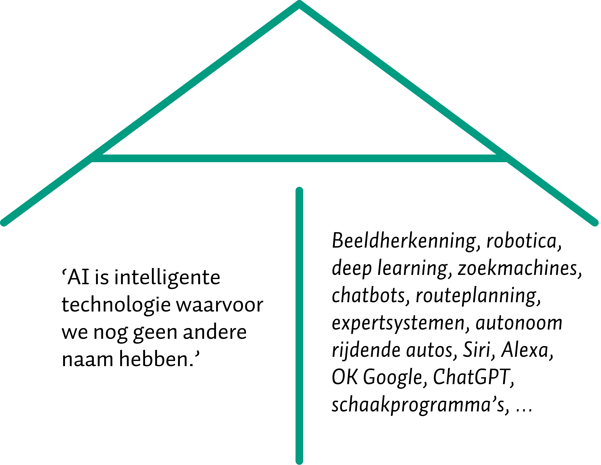
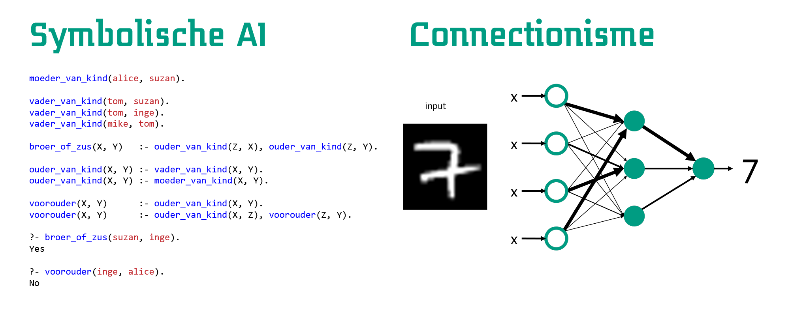
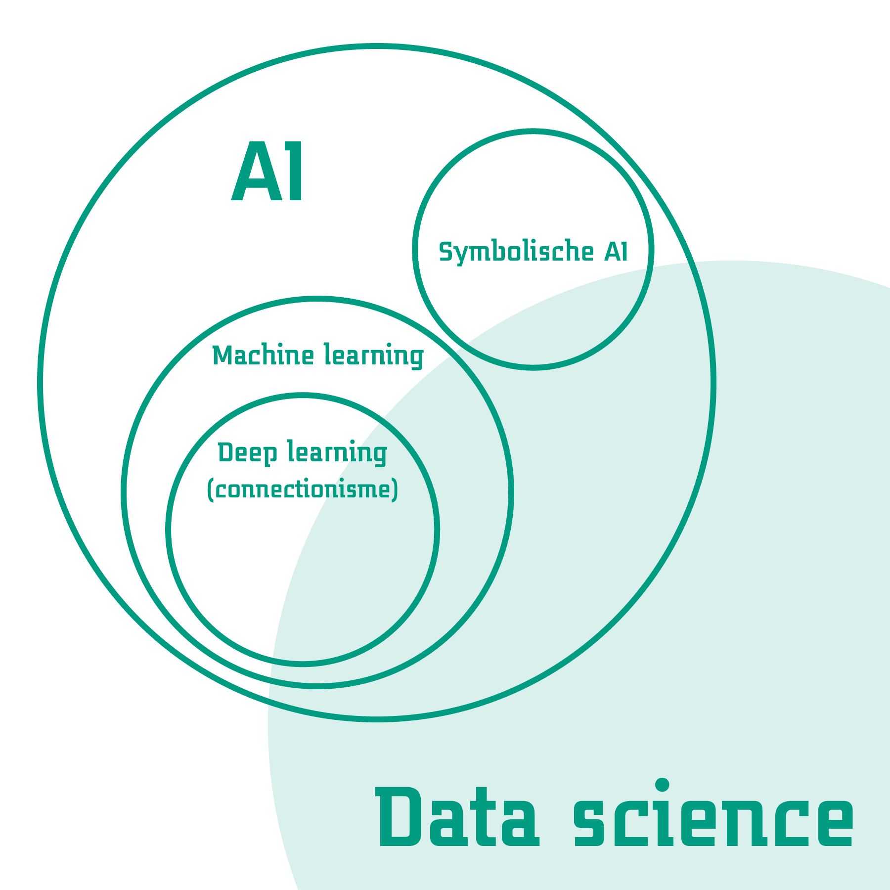
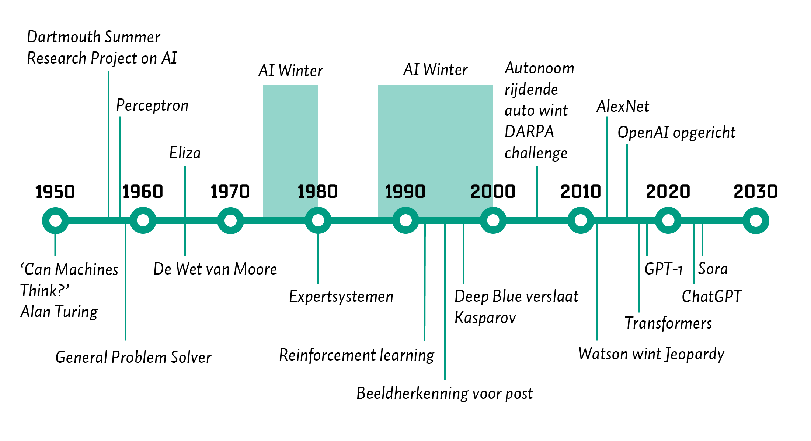
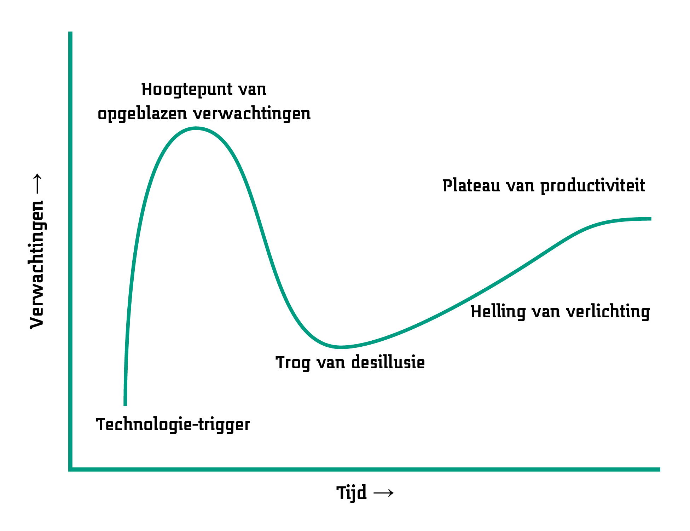

1 Introductie: Over AI
Samenvatting
AI is geen magie: het is een vakgebied dat zich richt op het ontwikkelen en onderzoeken van intelligente systemen. Hiervan zijn veel verschillende vormen, zoals zoekmachines, beeldherkenning en het genereren van teksten. AI is gebouwd op basis van algoritmes: instructies die computers kunnen uitvoeren. In de loop der jaren zijn veel doorbraken geweest in dit veld en gaat de discussie ook over de effecten van deze technologie. In deze rede licht ik een aantal uitdagingen toe die vandaag de dag en in de nabije toekomst aangepakt moeten worden.
Er zijn tal van manieren om een rede als deze te beginnen. Minstens zoveel als het aantal redenen om met Artificiële Intelligentie (AI) bezig te zijn. AI is een technologie die toegepast kan worden om processen te verbeteren, van zorg tot industrie en van energietransitie tot sociaal werk. Het kan gebruikt worden om betere diagnoses te stellen voor ziektes (Kumar e.a., 2023), automatisch te regelen hoe stroomvoorzieningen optimaal draaien (Shi e.a., 2020), en inzicht geven in maatschappelijke problemen (Nishant e.a., 2020).1 AI kan ook gebruikt worden om te onderzoeken wat intelligentie nu precies is, bijvoorbeeld om beter te begrijpen hoe ‘leren’ werkt (Modha e.a., 2011). Iedereen zal een eigen voorstelling kunnen maken van wat AI wel of niet is. Mijn doel bij deze rede is het verbeteren van het begrip van iedereen over AI en uitleggen hoe ons lectoraat Ambient Intelligence bijdraagt aan een verantwoorde, duurzame inzet en ontwikkeling van AI. Voordat ik in ga op wat we nu zouden moeten doen met AI, belicht ik in dit hoofdstuk eerst hoe we tot hier gekomen zijn en wat volgens mij belangrijke lessen zijn, door te praten over definities van, doorbraken in en discussies over AI.2 Daarna gaat deze rede verder met uitdagingen van vandaag de dag (Hoofdstuk 2, reflectie), de mogelijke toekomst van AI (Hoofdstuk 3, speculatie) om tenslotte af te sluiten met een oproep tot actie (Hoofdstuk 4, activatie).
1.1 Definities van AI
Als vakgebied bestaat AI officieus sinds 1956, toen de Dartmouth Summer Research Project on Artificial Intelligence in de zomer van dat jaar gehouden werd op Dartmouth College in de Verenigde Staten.3 Natuurlijk waren daarvoor al allerlei pogingen gedaan om intelligentie te begrijpen en te automatiseren, of dat nu in fictieve werken was (Cave & Dihal, 2019) of in wetenschappelijke (Russell & Norvig, 2016). Alan Turing wordt bijvoorbeeld als één van de grondleggers genoemd, met zijn Turing-machine die alle mogelijke berekeningen kan uitvoeren.4 Voordat ik Turings gedachten belicht, terug naar het moment waarop AI als dusdanig benoemd werd: het Summer Research Project in 1956. De insteek hiervan was als volgt:5
‘Wij stellen voor dat er in de zomer van 1956 een 2-maanden durende studie van 10 personen naar kunstmatige intelligentie wordt uitgevoerd aan Dartmouth College in Hanover, New Hampshire. De studie moet worden uitgevoerd op basis van de veronderstelling dat elk aspect van leren of een ander kenmerk van intelligentie in principe zo nauwkeurig kan worden beschreven dat een machine het kan simuleren. Er zal een poging worden gedaan om te ontdekken hoe machines taal kunnen gebruiken, abstracties en concepten kunnen vormen, problemen kunnen oplossen die nu alleen voor mensen zijn weggelegd, en zichzelf kunnen verbeteren. Wij denken dat er een significante vooruitgang kan worden geboekt in een of meer van deze problemen als een zorgvuldig geselecteerde groep wetenschappers er een zomer lang samen aan werkt.’ (McCarthy e.a., 2006)
Aan ambitie geen gebrek, zo erkenden de betrokkenen ook in een terugblik hierop, vijftig jaar later (Moor, 2006). De kern van AI blijkt hieruit wel duidelijk, namelijk het nabootsen of simuleren van intelligentie. John McCarthy, één van de oprichters van de zomerworkshop, definieerde AI simpelweg als ‘de wetenschap en techniek van het maken van intelligente machines’. Dit is een brede, inclusieve definitie die wat mij betreft nog steeds het beste werkt om het hele vakgebied samen te vatten. Een andere blik op AI is dat het draait om patroonherkenning en daarmee ook het genereren van patronen. In de jaren na Dartmouth heeft AI namelijk vele ontwikkelingen doorgemaakt (Buchanan, 2005). Allerlei onderzoeksgebieden zijn sindsdien ontstaan, zoals robotica, expertsystemen, beeldherkenning, redeneersystemen en zelflerende systemen (Russell & Norvig, 2016). AI is daarom een parapluterm, wat ook af te zien valt aan de letters A en I.

Een cynische definitie van AI zou ook kunnen zijn: intelligente technologie waar we nu nog geen andere naam voor hebben. Het is namelijk zo dat sommige technieken doorontwikkeld worden en een eigen naam krijgen. Soms wordt dan gezegd dat deze techniek AI is, waarbij het gevaar bestaat dat er geen andere vormen van AI zouden bestaan. Een recent voorbeeld is ChatGPT, dat gebruik maakt van AI-technologie, maar slechts één vorm hiervan is.6 Andere voorbeelden zijn navigatiesystemen (routeplanning m.b.v. Google Maps, TomTom), spraakherkenning (spraak naar tekst in schrijfprogramma’s, Apple Siri), zoekmachines (Bing, DuckDuckGo), zelfrijdende auto’s, en virtuele karakters in computergames. Tig vormen van AI, en veel sub-vakgebieden waar de meeste mensen zich niet bewust van zijn.
Ik grijp de kans niet aan om een complete uitleg te geven van alle mogelijke vormen van AI, maar geef wel een uitleg van de principes.7 Een belangrijke opmerking vooraf: mensen maken AI-technologie en deze is in de basis te begrijpen. AI is geen magie. AI is logisch opgebouwd en maakt gebruik van algoritmes: instructies die een computer kan uitvoeren. Deze algoritmes kunnen zo simpel zijn als ‘ALS dit, DAN dat’: ‘ALS de temperatuur in de woonkamer onder de 18,5 graden Celsius komt, DAN moet de verwarming actief worden.’ Ook kunnen algoritmes geprogrammeerd worden als complete grammatica’s met allerhande regels die getest kunnen worden. Op zichzelf kunnen zulke regels met moeite intelligent genoemd worden, maar een verzameling hiervan kan complex en intelligent(er) gedrag vertonen. Zo zijn er algoritmes om op basis van een kaart met afstanden tussen steden efficiënt de kortste route te vinden van A naar B. Ook zijn er algoritmes die woorden in zinnen herkennen en op basis daarvan een indicatie geven of de tekst positief of negatief geladen is.
Opvallend hierbij is dat bij deze aanpak de intelligente vastligt in het algoritme. Er wordt geen nieuwe kennis toegevoegd, alle gevallen moeten beschreven zijn voordat het algoritme gestart wordt. Het is regelgebaseerd, volgens een bepaalde logica. Er vindt dus geen ‘leren’ plaats. Dit is een belangrijk onderscheid in AI, wat door de opmars van beschikbare data vaak vergeten wordt: het onderscheid tussen lerende systemen en statische systemen.8 Dit verdeelt AI grofweg in twee kampen: symbolische AI en connectionisme. Beiden gaan uit van hoe menselijke intelligentie werkt. Symbolische AI gaat uit van een basis van begrijpelijke regels en vastgelegde logica.9 Het bekijkt intelligentie dus op een hoog niveau van abstractie dat door mensen leesbaar is. Dit kan effectief zijn, maar heeft als nadeel bijvoorbeeld dat het schrijven van de regels veel werk kan kosten in complexe situaties.10

Connectionisme gaat uit van een lager niveau van abstractie van intelligentie, door netwerken te beschrijven die lijken op de structuren in hersenen. Hierbij is het idee dat er (kunstmatige) neuronen met elkaar in verbinding staan die elkaar kunnen activeren op basis van signalen die ze doorgeven. Door verschillende signalen met elkaar te combineren, kunnen vervolgens complexe functies worden beschreven. Dit werkt door de neuronen in een netwerk met elkaar te verbinden en te trainen met data. Dit is deep learning, een vorm van machine learning: het een computer aanleren van een bepaalde taak zonder deze van tevoren geprogrammeerd te hebben. Om het schoolvoorbeeld te geven van de MNIST-dataset: stel, we willen een netwerk trainen om handgeschreven cijfers te herkennen.11 We geven het netwerk een plaatje van een cijfer als input en vragen het om als output te geven wat de waarschijnlijkheden zijn dat het een bepaald getal is. De verbindingen in het netwerk bepalen door de activities van de signalen in het netwerk wat deze waarschijnlijkheden zijn. Klopt de output van het netwerk niet? Dan ‘leert’ het netwerk door de activities aan te passen dankzij achterliggende wiskundige formules die geprogrammeerd zijn. Op den duur wordt dit netwerk steeds beter naarmate het meer voorbeelden van de cijfers te zien krijgt.12 Bij deep learning wordt dus in het begin enkel de vorm van het netwerk beschreven en traint het zichzelf op basis van data. De intelligentie komt voort uit het leerproces dat plaatsvindt.

Kort gezegd kan het vakgebied van AI met deze stromingen als volgt bekeken worden. Er zijn twee grote stromingen binnen AI, waarbij de symbolische AI uitgaat van het van tevoren uitdenken van patronen en het connectionisme deze patronen laat ontdekken. Het connectionisme heeft in de vorm van deep learning de laatste tien jaar veel aandacht heeft gekregen, dankzij computers die al het rekenwerk aan kunnen. Data science maakt gebruik van technieken uit deze wereld om op basis van data nieuwe inzichten te verwerven. Dat kan door modellen te trainen met connectionistme en via regelgebaseerde logica, gecombineerd met technieken uit onder andere statistiek en informatica. Maar daarvoor waren er ook al tal van AI-technieken die zorgden voor nieuwe inzichten en toepassingen. Deze belicht ik in de volgende sectie.
1.2 Doorbraken in AI
In de afgelopen 80 jaar is er veel gebeurd in het vakgebied AI. Men is van ver gekomen, en tegenwoordig draaien vele systemen op AI-gebaseerde technologie, of we ons daarvan nu bewust zijn of niet. In vogelvlucht noem ik hier een aantal hoogte- en dieptepunten voor een historisch perspectief. Voor een volledige(re) geschiedenies van AI zijn er tal van werken beschikbaar.13

Alan Turing verdient de eer om benoemd te worden met zijn doorbraak in denkwerk in 1950:14
Ik stel voor om de vraag te overwegen: ‘Kunnen machines denken?’ (Turing, 1950)
Dit was de aanzet voor het gedachte-experiment de Turing-test.15 Hierin moet een ondervrager achterhalen in welke van twee kamers zich een mens of een machine bevindt. De ondervrager kan alleen vragen stellen en krijgt daarop antwoord vanuit beide kamers. De machine zal zich proberen voor te doen als een mens, terwijl de mens de ondervrager zal proberen te overtuigen dat die een mens is. Uit deze simpele voorzet ontstond een heel plan met ideeën om machines menselijke intelligentie te laten imiteren en kwamen er vele tegen-argumenten naar voren, al helemaal met de taalmodellen van vandaag de dag (Pinar Saygin e.a., 2000; Sejnowski, 2023).
Overigens was Ada Lovelace ook een persoon die eer verdient.16 Zij zag al in 1843 in dat machines niet alleen voor rekenwerk gebruikt hoefden te worden, maar ook voor andere, menselijke problemen (Fuegi & Francis, 2003). Maar, zoals gezegd, pas in de jaren ’50 van de 20e eeuw zou er echt werk gemaakt worden van AI als vakgebied, dankzij het Dartmouth Summer Research Project (Moor, 2006). Dit project was tamelijk ambitieus, maar legde enkel het grondwerk voor tal van onderzoek dat daarna zou moeten gebeuren. In 1958 werd de basis gelegd voor deep learning Rosenblatt (1958) met een klein kunstmatig neuraal netwerk genaamd perceptron om de werking van zulke netwerken aan te tonen. In 1959 werd de General Problem Solver ontwikkeld die met behulp van intelligente zoekalgoritmes bepaalde problemen kon oplossen (Newell e.a., 1959). In 1965 werd Eliza ontwikkeld, de eerste chatbot, die een psychotherapeut simuleerde door ingetypte zinnen te lezen met geprogrammeerde patroonherkenning (Weizenbaum, 1966). In de latere jaren ’60 werden verbeteringen voor deep learning ontwikkeld (Amari, 1967) en tegelijkertijd werden tekortkomingen van zulke netwerken benoemd. Begin jaren ’70 heerste er nog enthousiasme, zoals Minsky gezegd zou hebben:17
‘Binnen drie tot acht jaar hebben we een machine met generieke intelligentie van een gemiddelde mens. Ik bedoel een machine die Shakespeare kan lezen, een auto kan smeren, kantoorpolitiek kan spelen, een mop kan vertellen, een gevecht kan aangaan. Op dat moment zal de machine zichzelf gaan ontwikkelen met fantastische snelheid. Binnen een paar maanden zal het een genie zijn en een paar maanden daarna zullen diens krachten onvoorstelbaar zijn.’ (Darrach, 1970)
Maar niet heel veel later deed een nieuw begrip diens intrede: de eerste AI Winter begon. Alle successen tot dan toe kwamen niet in de buurt bij het beeld dat geschetst werd. De intelligentie van de ontwikkelde systemen was beperkt en er waren duidelijke limitaties. Met name dankzij verloren vertrouwen in deze technologie door wat nu de Defense Advanced Research Projects Agency (DARPA, van de Verenigde Staten) heet, hield de financiering voor het onderzoek grotendeels op. Deze AI Winter hield aan tot 1980, waarin expertsystemen commercieel inzetbaar werden (Buchanan & Smith, 1988). Hieraan werd al gewerkt in de jaren ‘60: het zijn systemen waarin kennis in regelvorm werd opgeslagen, waarna een efficiënt algoritme kon achterhalen welke kennis van belang was om een bepaald probleem op te lossen en daar de stappen voor te schetsen. In de jaren ’80 werden door grote bedrijven miljarden euro’s gespendeerd om zulke systemen te ontwikkelen en hun process te optimaliseren. Veel van deze systemen hadden echter hun mankementen, want ze waren bovenal duur om te onderhouden vanwege alle regels (en uitzonderingen daarop) die handgeschreven moesten worden. Dit zorgde voor een tweede AI Winter, die zou aanhouden van 1990 tot het begin van het nieuwe millenium. Intussen zouden er wel nieuwe doorbraken zijn, zoals reinforcement learning in het begin van de jaren ’90. Deze techniek zorgt ervoor dat een zogenaamde ’agent’ diens omgeving kan waarnemen en kan plannen om acties uit te voeren die die dichter bij diens doel brengen (Kaelbling e.a., 1996). Dit gebeurt door middel van het geven aan positieve of negatieve beloningen voor acties in die omgeving. In 1996 en 1997 speelde de computer Deep Blue tegen Gary Kasparov, wereldkampioen schaak, en versloeg deze in hun rematch (Campbell e.a., 2002). Dit was een mijlsteen doordat deze gebeurtenis liet zien dat een computer beter was dan een mens in een activiteit waarvoor men heel intelligent zou moeten zijn. Deep Blue’s algoritmes baseerden zich op 700.000 schaakwedstrijden van grootmeesters in schaak en een verzameling van specifieke openingszetten, waarmee de machine 200 miljoen posities per seconde kon evalueren.
De volgende ontwikkeling die zorgde voor de huidige AI Lente waren neurale netwerken voor deep learning. De ideeën hiervoor bestonden al in de jaren ’60, maar uitwerkingen hiervan waren gelimiteerd door rekenkracht. Vanaf het begin van de 21e eeuw werd rekenkracht beschikbaar die ervoor zorgde dat de netwerken konden groeien van tientallen neuronen in een paar lagen tot miljoenen neuronen in tientallen lagen.18 Vanaf ongeveer 2010 werden toepassingen in beeldherkenning hiermee enorm verbeterd. De mijlpaal hier was AlexNet, een deeplearning-netwerk dat in de befaamde ImageNet Challenge voor beeldherkenning als enige neurale netwerk meedeed, en won met 10 procentpunt verschil met de tweede plaats (Krizhevsky e.a., 2012). Vanaf daar was het hek van de dam en begonnen meer en meer teams en onderzoekers zich met deep learning te bezigen, net als bedrijven waarvoor commerciële inzet van zulke technieken nu haalbaar ging worden.19 Deep learning leent zich niet alleen voor beelden goed, maar ook voor tekst, geluid, tijdsignalen, en vele andere soorten data (LeCun e.a., 2015). In het volgende hoofdstuk wordt duidelijk wat hier voor haken en ogen aan zitten, maar de mogelijkheden van deze technieken zijn duidelijk legio.
Wat we de afgelopen jaren hebben meegemaakt is de opkomst van generative AI zoals grote taalmodellen of Large Language Models (LLMs) (Zhao e.a., 2023), met als bekendste voorbeeld ChatGPT, en text-to-image-modellen die tekst kunnen omzetten in beelden, zoals DALL-E en Midjourney (Zhang e.a., 2023). LLMs zijn gebaseerd op de transformer-architectuur die ervoor zorgt dat tekst efficiënt gerepresenteerd kan worden (Vaswani e.a., 2017). Op basis van grote hoeveelheden tekst kunnen dan modellen worden gemaakt die verbanden in de tekst vastleggen en op die manier een ‘begrip’ hebben van die tekst. De text-to-image-modellen werken dan weer op basis van modellen die getraind zijn om ruis uit plaatjes te verwijderen, waarbij er een tekst bij het plaatje hoort die beschrijft wat er op het plaatje staat. Dit idee is in het extreme doorgedreven, door op ruizige plaatjes een model te trainen en vervolgens een plaatje met alleen ruis en een beschrijving te geven aan zo’n model (Yang e.a., 2023). De impact van deze twee technologieën is gebleken op veel vlakken en behandel ik in het volgende hoofdstuk. Duidelijk mag zijn dat AI nu al een lange historie heeft en er nog veel te gebeuren staat.
1.3 Discussies over AI
Wat de doorbraken van AI ons in ieder geval laten zien, is dat er vaak een duidelijke verwachting is van wat AI wel en niet kan. Dat kan heel fundamenteel en theoretisch zijn, zoals de vraag of AI bewustzijn kan hebben. Het kan ook heel praktisch zijn, namelijk of AI een bepaalde taak kan uitvoeren. Wat in beide gevallen vaststaat, is dat verwachtingen vaak hooggespannen zijn. Dat blijkt uit de AI winters die eerder plaatsvonden: men verwachtte veel van AI, en ook op korte termijn. Dit is een typisch gegeven voor nieuwe technologie, wat beschreven kan worden met de hype cycle, bekend dankzij onderzoeks- en adviesbureau Gartner.20 Het principe hiervan is het beste uit te leggen met deze figuur:

Voor nieuwe technologieën kunnen vijf fases beschreven worden:21
- Technologie-trigger: de eerste verhalen over een technologie doen de ronde.
- Hoogtepunt van opgeblazen verwachtingen: men raakt meer dan enthousiast, de hype is op diens hoogtepunt.
- Trog van desillusie: de technologie lost de verwachtingen niet in, wat blijkt uit falende implementaties en experimenten.
- Helling van verlichting: bepaalde implementaties werken toch en worden doorontwikkeld.
- Plateau van productiviteit: adoptie van de technologie door het grote publiek.
Gartner probeert met invullingen van deze hype cycle inzicht te bieden in welke technologieën op welke plek in de curve zitten. Zo ook voor AI, en alle afzonderlijke technieken in dit veld. Volgens recente voorspellingen van Gartner zit bijvoorbeeld Generative AI (de taalmodellen en plaatjesgeneratoren) al voorbij het hoogtepunte van fase twee (Gartner, Inc., 21 August 2024). Een inzicht dat belangrijk is bij dergelijke voorspellingen komt van de hand van Roy Amara, onderzoeker bij verschillende Amerikaanse universiteiten en futuroloog.22
De Wet van Amara: We hebben de neiging om het effect van een technologie op de korte termijn te overschatten en het effect op de lange termijn te onderschatten.
Het plateau van productiviteit kan uiteindelijk hoger liggen dan we verwachten als we gedesillusioneerd zijn. En wellicht is de impact van een technologie anders dan verwacht, wat maar al te vaak gebeurt.
Als we kijken naar wat we uiteindelijk kunnen verwachten bij AI, is de hamvraag hoe intelligent deze technologie werkelijk kan worden. Is het theoretisch en ook praktisch mogelijk dat AI slimmer wordt dan mensen? Deze fundamentele vraag splitst het AI-veld ook op in twee grote kampen: zij die de strong AI aanhangen versus de weak AI (Liu, 2021). De laatste betekent zoveel als AI die toegespitst is op één toepassing, zoals het herkennen van plaatjes. Dit wordt ook wel narrow AI genoemd. De lading hiervan is dat AI goed kan zijn in afzonderlijke taken en hiermee mensen kan ondersteunen, maar geen generieke taken kan oppakken. Sommigen zijn ervan overtuigd dat dit voor AI nooit mogelijk zal zijn.23 Aan de andere kant van het spectrum zit de strong AI, waaronder AI valt die wel degelijk generieke taken kan oppakken, dan wel bewustzijn kan hebben of superintelligent kan zijn (Bostrom, 2015). Eén van de centrale aannames hierbij is dat, als we de hersenen van een mens perfect kunnen namaken in termen van input, output, en het complete neurale netwerk daartussen, we in staat zijn menselijke intelligentie te maken (Cole, 2004). Kort door de bocht gezegd is het idee dat hersenen een computer zijn. Functioneel gezien zou er dan namelijk geen verschil moeten zijn tussen een ‘normale’ mens en een nagemaakte mens die draait op andere hardware.
Dit zijn grote discussies en zeker geen uitdagingen die ik in deze rede of in ons lectoraat als geheel wil aanpakken.24 Maar ze zetten wel de toon voor de verwachtingen over AI als technologie en einddoelen die we wel of niet willen najagen. In Hoofdstuk 2 richt ik me op praktische uitdagingen voor de komende jaren die we tegemoet gaan, en waar we ons volgens mij op zouden moeten richten.
Hierom wordt AI tegenwoordig bestempeld als key enabling technology (KET). Andere KETs zijn bijvoorbeeld fotonica, nanotechnologie, robotica en quantum computing.↩︎
Ook hiervoor geldt het patroon dat, wie niet leert van de geschiedenis, gedoemd is deze te herhalen.↩︎
Met deze introductie doe ik veel onderzoek en innovaties binnen AI te kort (zoals genetische algoritmen (Mitchell, 1998), agent-based modellen (Macal, 2016) en Bayesiaanse netwerken (Heckerman, 1998)), maar anders wordt deze sectie te lang. Een uitspraak die mij is bijgebleven van mijn studiejaren is dat het lezen van het boek Gödel, Escher, Bach van Daniel Hofstadter in theorie een propedeusediploma in AI zou moeten opleveren (Hofstadter, 1999). Ook van mijn kant is dit een aanrader, nog steeds.↩︎
Turing leidde een bijzonder maar ook tragisch leven. Hij legde het grondwerk voor het vakgebied van theoretische informatica en hielp de Britten de Enigma-code kraken tijdens de Tweede Wereldoorlog. Vanwege zijn homoseksuele geaardheid werd hij berecht en stierf op 41-jarige leeftijd door cyanide-vergiftiging, al dan niet zelf toegebracht (Copeland, 2024a).↩︎
Vertaald uit het Engels.↩︎
Taalmodellen op basis van transformers die weer voortkomen uit deep learning, meer hierover in het volgende hoofdstuk.↩︎
Een voorzetje voor het nawoord, voor diegenen die meer te weten willen komen over de details van AI: de Nationale AI-cursus met een uitstekende uitleg, en de diepgaandere AI-trainingssessies van Saxion die we vanuit ons lectoraat Ambient Intelligence ontwikkeld hebben.↩︎
Daarbij is ook nog het verschil te maken tussen systemen die eenmalig leren en als ze draaien niet verder leren, en de systemen die steeds nieuwe data verzamelen en op basis daarvan nieuwe dingen leren. Dit laatste wordt vaak verwacht van AI, maar is juist vaak niet het geval. De volgende hoofdstukken lichten dat in meer detail toe.↩︎
Dit wordt liefkozend GOFAI genoemd: Good Old-Fashioned AI.↩︎
Wat moet wel en niet beschreven worden (Shanahan, 2016)? Kan intelligentie los van een lichaam gezien worden (Chrisley, 2003)?↩︎
Dit is supervised learning, waarbij er ook unsupervised learning bestaat, met andere doelen, bijvoorbeeld om onbekende data te analyseren (Russell & Norvig, 2016). Gebruikelijk is dat er duizenden voorbeelden getoond moeten worden aan netwerk voordat het goed werkt.↩︎
De Encyclopedia Brittanica legt het bondig uit, met tal van verwijzingen (Copeland, 2024b), maar ook de Wikipedia is hiervoor een goed startpunt (Wikipedia contributors, 2024a, 2024c). De website AI Navigator laat visueel een hele reeks doorbraken zien met meer detail.↩︎
Vertaald uit het Engels.↩︎
Destijds de Imitation Game genoemd.↩︎
Niet alleen omdat zij benoemd wordt de eerste computerprogrammeur geweest te zijn (Fuegi & Francis, 2003).↩︎
Vertaald uit het Engels.↩︎
Dit kon dankzij zogenaamde Graphical Processing Units, die videokaarten in computers die parallelle berekeningen doen voor beelden en uitstekend geschikt zijn voor parallelle berekeningen in neurale netwerken.↩︎
Dat wil zeggen, voor complexere taken. Beeldherkenning voor bijvoorbeeld adresherkenning op brieven bestaat al sinds de jaren ’90 (LeCun e.a., 1995).↩︎
Vertaald uit het Engels.↩︎
Er zijn weinig goed toegankelijke bronnen te vinden over Amara; de beste plek om meer te weten te komen is via Wikipedia (Wikipedia contributors, 2024b).↩︎
Ik laat de discussies hierover voor nu buiten beschouwing, maar in essentie gaat hier over de mogelijkheden of AI begrip en bewustzijn kan hebben. Zie bijvoorbeeld het gedachte-experiment van John Searle over de Chinese Kamer (Cole, 2004), iets waar bijvoorbeeld Daniel Dennett het faliekant mee oneens is (Dennett, 2017).↩︎
Ik zal er wel op reflecteren in Hoofdstuk 3.↩︎